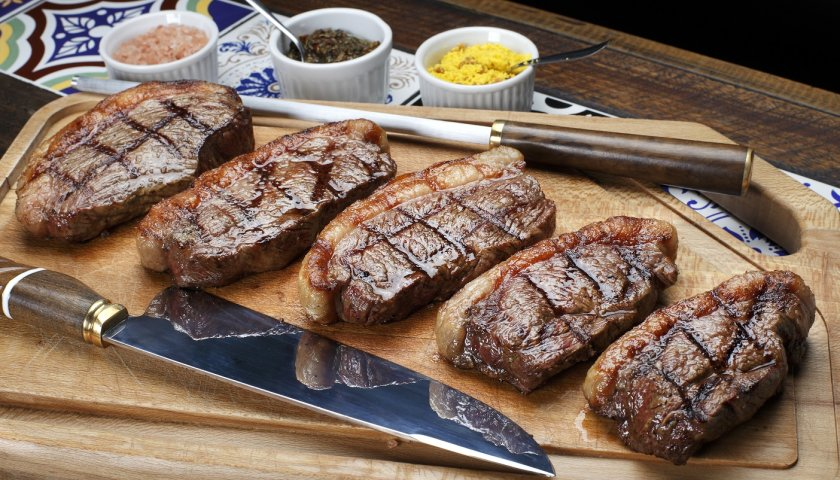

Churrasco

Here's how you can make a legitimate brazilian barbecue!
Imagine you can have a nive meal like you were in a Fogo de Chao. Follow these instructions and you will stop just imagining!
Ingredients
- Cut the entrecot in slices 1 inch wide
- Put the salt on the meat
- Put the meat in the grill for 6 to 8 minutes
- Turn the meat and wait another 6 to 8 minutes
- Have a nice meal with your family. Remember, barbecue is always better when shared with another people!